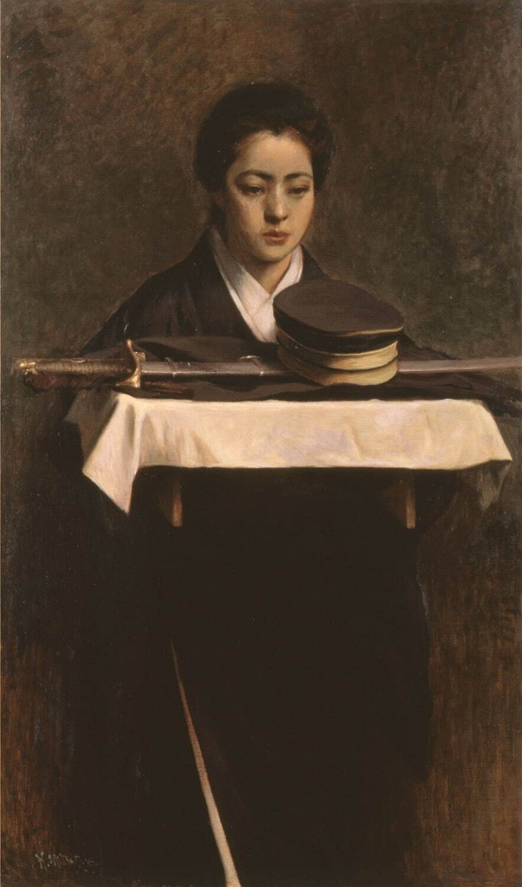

звезда（卖高中课本教辅资料）
@DustSwallo15805
RT @LfXAMDg4PE50i9e: 日露戦争で散った夫の遺品を見詰める妻。凛としたその様子は当時の日本では称えられたでしょう。しかし、彼女の心は泣いています。この画像では判別できませんが、彼女の目元には僅かに涙が滲んでいるのです。
画像は満谷国四郎の「軍人の妻」（190…

昔の芸術をつぶやくよ
@LfXAMDg4PE50i9e
日露戦争で散った夫の遺品を見詰める妻。凛としたその様子は当時の日本では称えられたでしょう。しかし、彼女の心は泣いています。この画像では判別できませんが、彼女の目元には僅かに涙が滲んでいるのです。
画像は満谷国四郎の「軍人の妻」（1904）。この絵は福富太郎が米国より買戻しました。 https://t.co/x0pKr3DgvD